My Finale
El final de Darwin,Gumball después de haber sido corrompido por el glitch arrastra a Darwin a su final,en dónde por más que Darwin intenta ayudarlo solo aceleró su fin hasta corromperse por completo. Absolute Cinema🗿
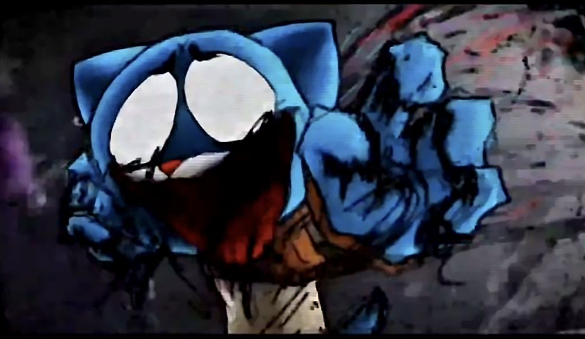
Hola a todos, mi nombre es Juan.A y desarrollé esta página donde pueden encontrar mods, recreaciones y músicas para Friday Night Funkin'. Todos estos proyectos los hice con mucho cariño para la comunidad, así que espero que los disfruten a full.
Descarga tus mods desde MediaFire, mira un preview en TikTok y sigue las indicaciones más abajo para instalarlos en Psych Engine 7.3 para Android.
El final de Darwin,Gumball después de haber sido corrompido por el glitch arrastra a Darwin a su final,en dónde por más que Darwin intenta ayudarlo solo aceleró su fin hasta corromperse por completo. Absolute Cinema🗿

Guao...después de meses de trabajo finalmente lo complete...Espero que te guste mi mod lo hize con mucho cariño esfuerzo y dedicación,disfrútalo bro😄
“Suffering Siblings” es una canción que transmite una sensación de conflicto emocional y desesperación entre personajes que alguna vez estuvieron unidos. A través de un ritmo intenso y tonos glitch característicos de Friday Night Funkin', la música refleja la lucha interna y externa contra una corrupción que los está destruyendo, combinando momentos caóticos con otros más melancólicos para representar tanto el dolor como la resistencia.
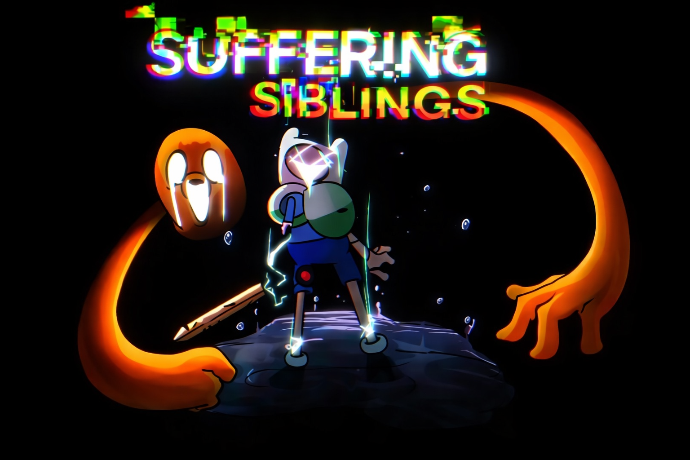
Un extraño glitch devora el mundo de Gumball y Darwin y los deja rotos por dentro, llenos de miedo y rabia, mientras su ciudad se vuelve fría, vacía y sin vida.
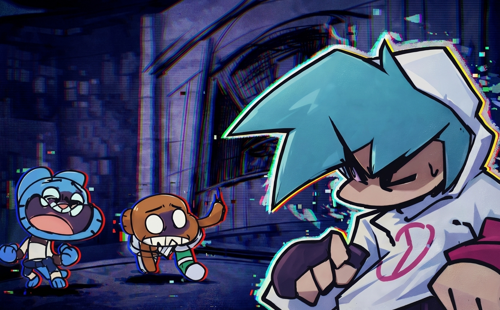
Blessed By Sword es un mod con estética roja intensa y una atmósfera pesada, pensado para los que quieren algo más agresivo en lo visual y lo musical dentro de Friday Night Funkin'.
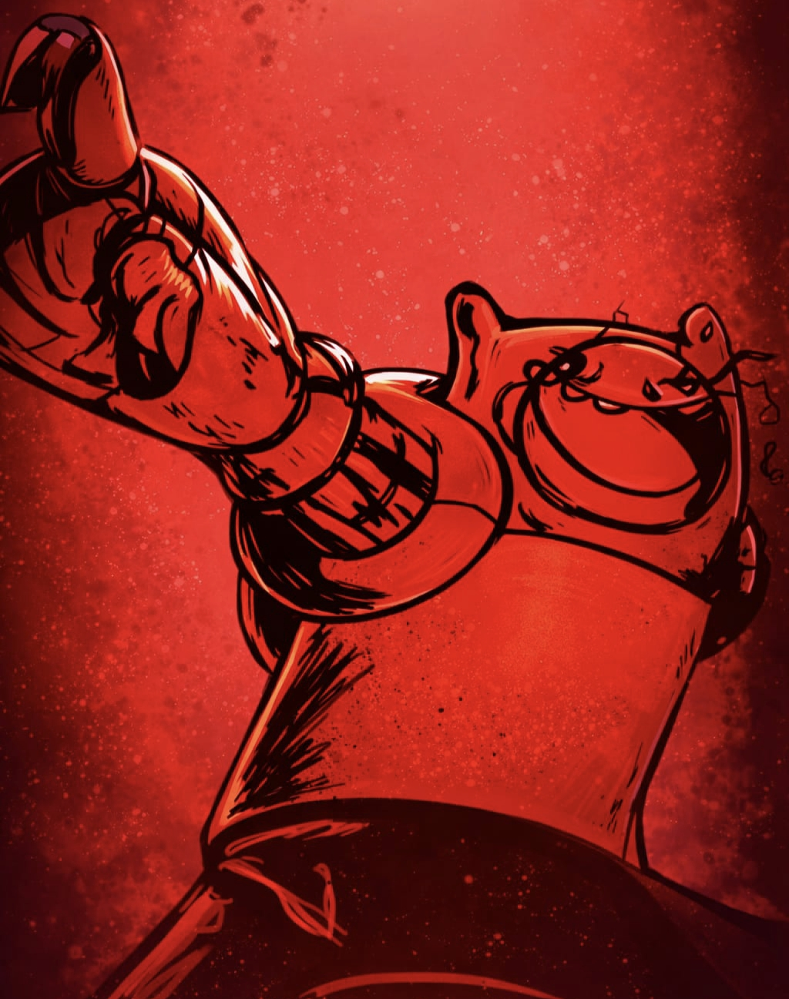
Drowning In Darkness – Psych Engine Port trae una atmósfera oscura y tensa, con canciones intensas y visuales pesados pensados para jugadores que quieren un reto más sombrío en Friday Night Funkin'.
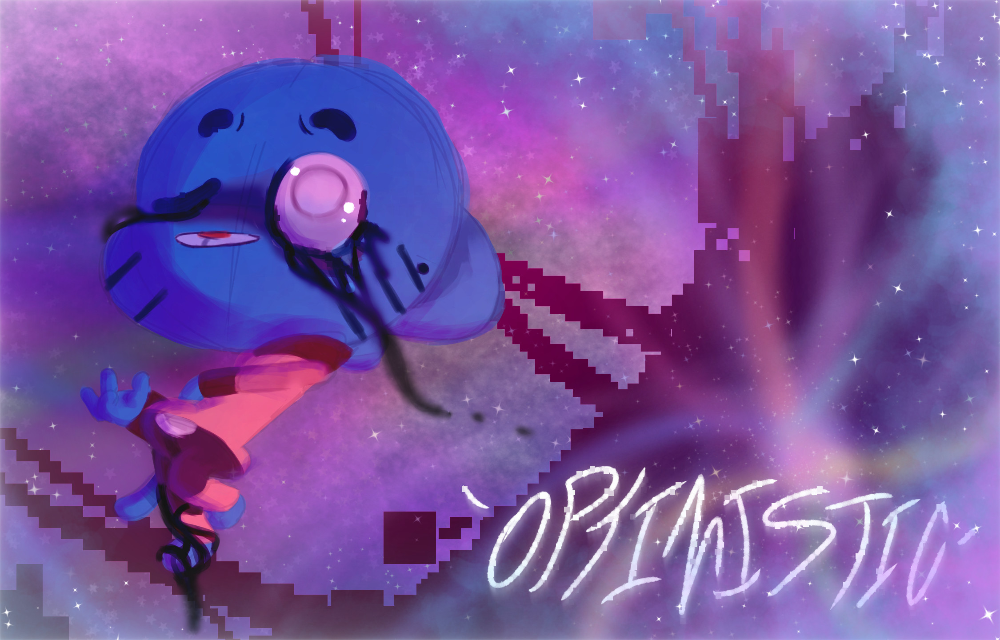
Child's Play My Version es un mod con un estilo de dibujo dinámico y caótico, donde los personajes se enfrentan en una batalla llena de energía y detalles visuales tipo boceto.
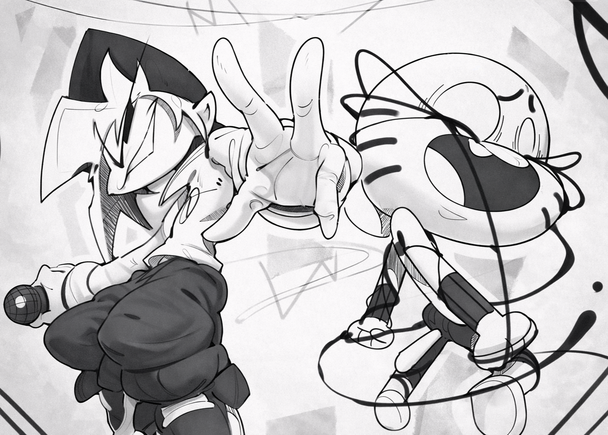
Too Slow Encore es un mod inspirado en la versión extendida de la famosa canción de Sonic creepypasta, con una atmósfera intensa y visuales oscuros pensados para los fans de los EXE.
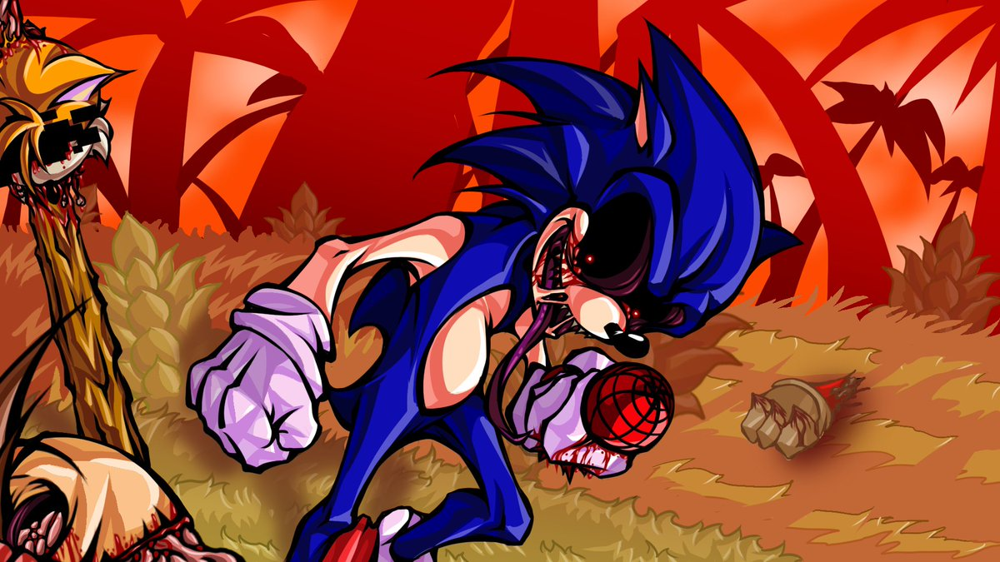
NMI Real [サイコポート] está inspirado en la creepypasta No More Innocence, un yokai que habita en un juego bootleg de Sonic y corrompe los recuerdos de la infancia de los jugadores usando una versión maldita del erizo.
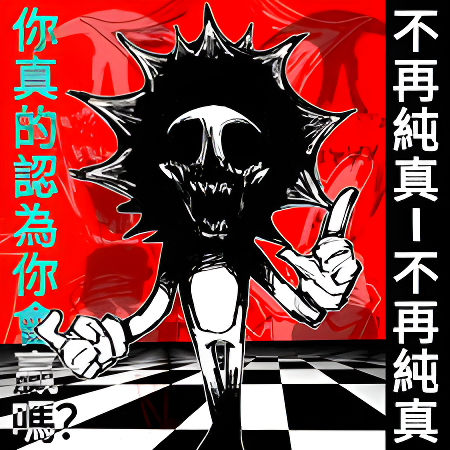
Orbituary My Take es mi versión inspirada en el tema y la estética de Sonic Legacy, el mod oficial de Sonic.exe que reimagina VS Sonic.EXE con mejores sprites, música pulida y una historia más oscura alrededor de X y su universo.
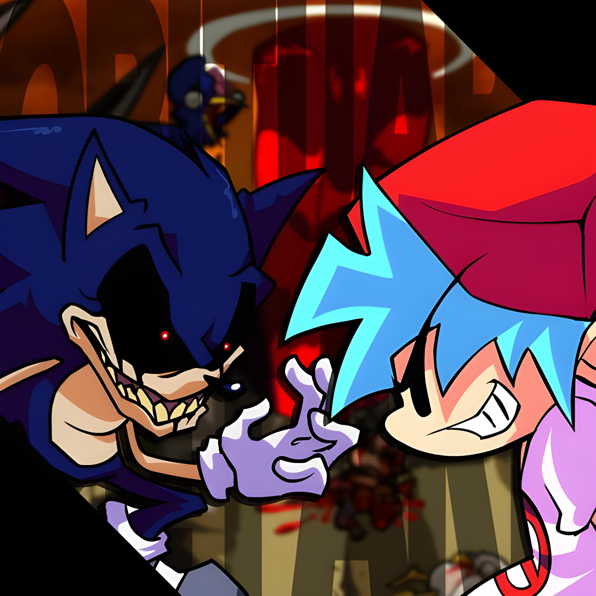
2HOT BF MIX ANDROID PORT es un port para móvil del tema 2HOT BF Mix, donde Boyfriend se enfrenta en una batalla de rap intensa y llena de letras contra otra versión de sí mismo, con una pista rápida y muy bailable inspirada en el mod original de RixFX, el modo original se puede ver en el botón para poder observar el mod yo lo que hize fue cambiar la compatibilidad de los shaders y scripts de Pc a Android
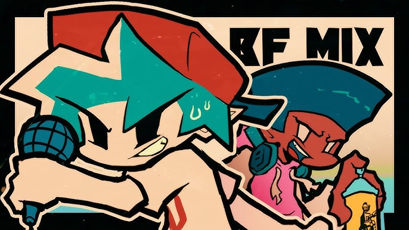
Bro, instala este zip es obligatorio para que funcionen los mods perfectamente estos son los pasos que tienes que seguir instala el ZIP descomprimelo y te debe de dejar dos carpetas una que se llama script y otra que se llama shaders, esos dos archivos tienes que moverlos a la carpeta .Psych Engine/mods/dentro de la carpeta mods no entres a ningún mod solo dentro de la carpeta mods pega esas dos carpetas e intenta ejecutar los mods desde el Psych Engine que se encuentra en el botón de más abajo de la página el que dice de más juegos y aplicaciones
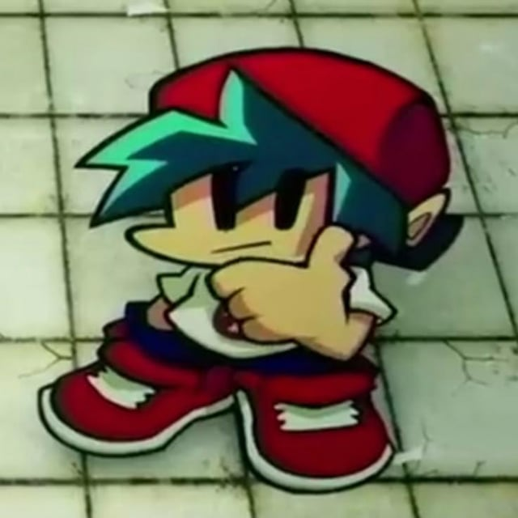
Sigue estos pasos al pie de la letra para que los mods funcionen sin problemas en tu dispositivo Android.
.PsychEngine/mods/ de tu dispositivo.
mods pega la carpeta del mod (por ejemplo, MyFinale o
PibbyApocalypse).
Si necesitas ayuda con la instalación o encontraste algún bug raro en los mods, puedes escribirme directamente por mensaje.
📱 WhatsApp / contacto: 0968997271
Cuando me escribas, porfa indica qué mod estabas usando, qué problema te salió y en qué dispositivo estás jugando (marca y modelo). Así puedo ayudarte más rápido.
Deja tu opinión sobre los mods, qué tal te fue con la dificultad, la música y todo el vibe. Tus comentarios ayudan a mejorar y a montar nuevos proyectos.